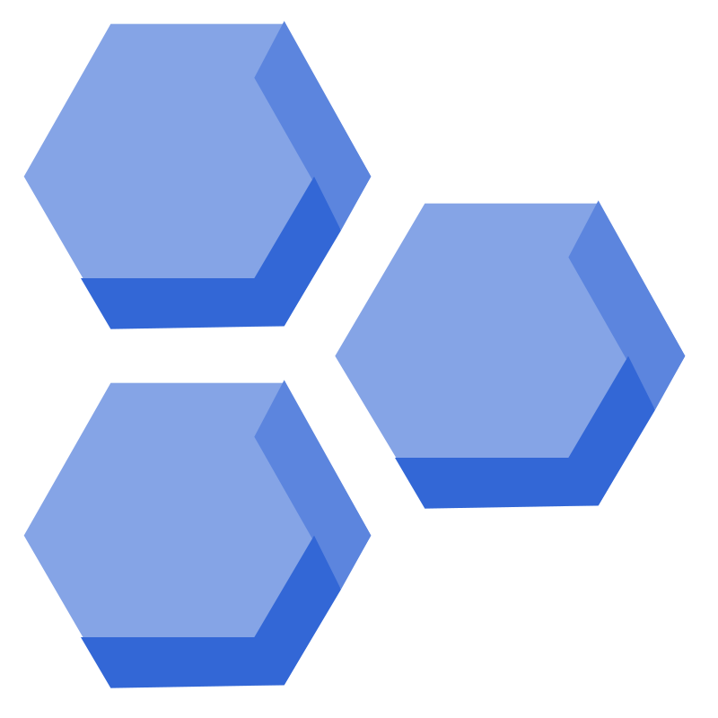
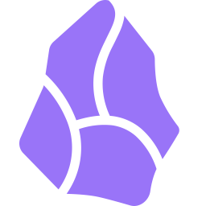

 Recent Projects
 Obsidian Plugins
🚩 Pixel Banner
An Obsidian plugin that allows you to automatically add beautiful banner images to your notes for a visually appealing appearance.
🦶 Rich Foot
An Obsidian plugin that enhances note footers with backlinks, outlinks, and metadata.
 NPM Packages
NPM Packages
🍱 Semantic Chunking
Intelligent text chunking for Large Language Models with dynamic thresholds and ONNX support.
🕵️♂️ Chunk Match
Semantic text chunking and matching for precise document retrieval using cosine similarity.
🪨 Bedrock Wrapper
Simplify integration of OpenAI-compatible API objects with AWS Bedrock's serverless inference LLMs.
 NodeJS Apps
NodeJS Apps
🔀 Bedrock Proxy Endpoint
OpenAI API compatible server for AWS Bedrock LLMs, making it easy to use Bedrock with existing applications.
🌐 Web Augmented Generation
LLM responses enhanced with real-time web search results using SearXNG and various LLM providers.